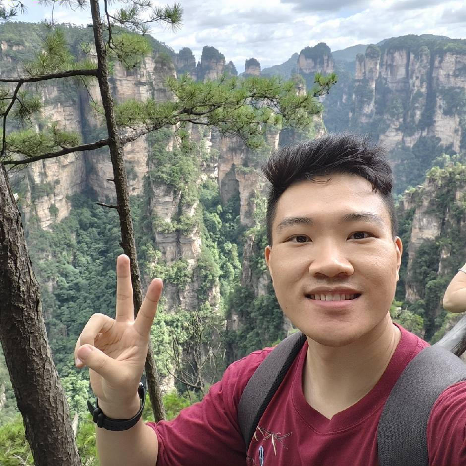
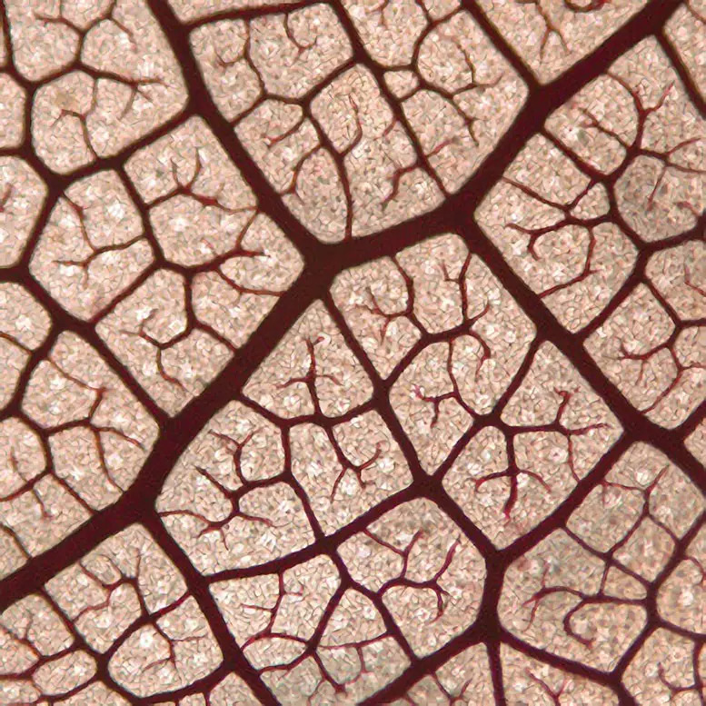
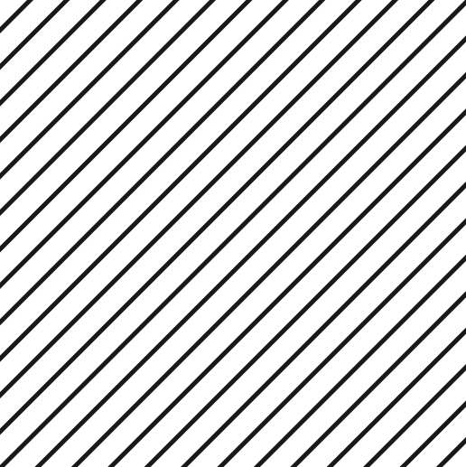
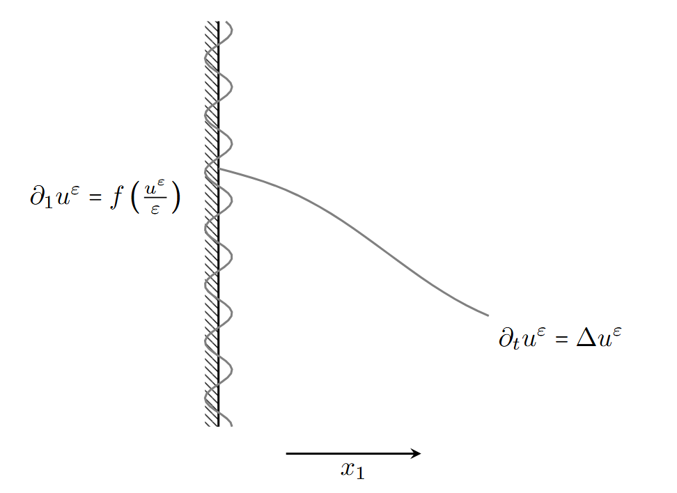

黄忠淦
Zhonggan Huang
ABOUT ME
I am a 5th-year PhD student in the Department of Mathematics, University of Utah. My advisor is Prof. W. Feldman. I'm interested in homogenization theory, free boundary problems and shape optimization problems.
MY CONTACT DETAILS
Address: 155 South 1400 East, JWB 319, Department of Mathematics, University of Utah, Salt Lake City, U.S.
E-mail: zhonggan@math.utah.edu
EDUCATION
University of Utah, PhD in Mathematics
Aug 2021 – Jul 2026 (expected)
SUSTech, Master of Mathematics
Sep 2019 – Jun 2021
SUSTech, Bachelor of Mathematics
Sep 2015 – Jun 2019
溯洄从之，道阻且长。溯游从之，宛在水中央。
Recent figures





